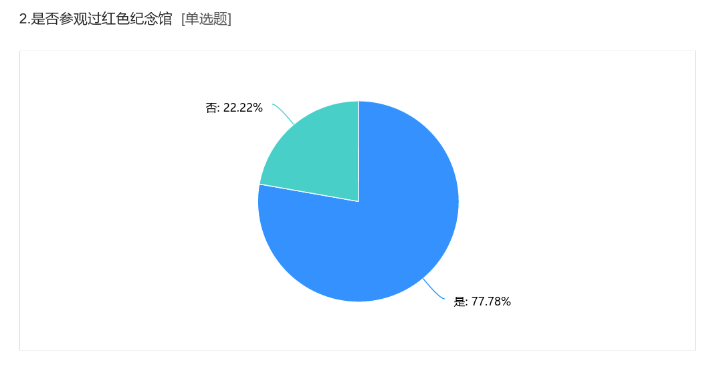
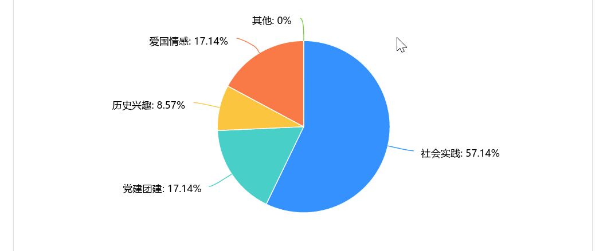
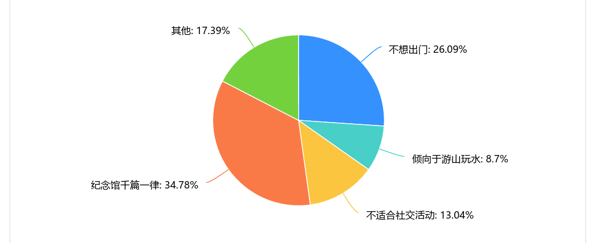

在“革命文物大思政课”中杨建武局长提到浙江大地遍布着无数的革命遗迹与红色纪念馆，然而在南湖之行前我们却少有参观过红色纪念馆，就此猜想可能有相当一部分的大学生也对红色纪念馆缺乏认识。我们认为了解大学生群体为什么喜欢或者不喜欢参观红色纪念馆或许对把握青年人的心态与更好地发挥红色纪念馆的作用有所帮助。
在调研过程中我们发现浙江大地上确实遍布着无数的红色纪念馆：宁波的山洋革命根据地纪念园、嘉兴的徐肖冰侯波纪念馆、温州的洞头先锋女子民兵连纪念馆、湖州的新四军苏浙军区纪念馆、丽水的浙西南革命根据地纪念馆、台州的中共台属特委机关旧址纪念馆、绍兴的浙东新四军后勤基地纪念馆、衢州的常山县西源革命纪念馆等等。仅杭州一地就有新登战役纪念馆、主席视察小营巷纪念馆、浙东人民解放军金萧支队纪念馆、乔司戊寅公墓、硬骨头六连展览馆、郁达夫故居、夏衍故居、衙前农民运动纪念馆、马一浮纪念馆、梅家坞周恩来纪念室、杭州解放纪念碑、周恩来演讲纪念亭、抗日战争胜利浙江受降纪念馆、浙江革命烈士纪念馆、杭州市革命烈士纪念馆、浙江辛亥革命纪念馆、临安烈士纪念馆、临安新四军历史纪念馆、邹子侃烈士墓、淳安县中国工农红军北上抗日先遣队纪念馆等数十个革命遗迹与红色纪念馆。它们遍布于我们身边的社区、景区中，尽管数量众多但却并未给大学生们留下深刻印象，为探究这一问题我们采用访谈与问卷的形式进行进一步了解。
我们大致总结出了参观与不参观分别的几个主要原因
参观的原因：历史兴趣、爱国情感、社会实践、党建团建
历史兴趣：这些纪念馆通常包含大量的历史文物、图片和文字资料，通过它们，我们可以了解到中国共产党的成长历程，了解革命先辈们的英勇事迹和崇高精神。
爱国情感：通过了解中国共产党的奋斗历程和革命先辈们的英勇事迹，我们可以深刻感受到国家和人民的伟大，从而增强我们的国家自豪感和爱国情感。
社会实践：在学校的一些假期社会实践自行组织参观红色纪念馆，通过实地考察和体验，将书本上的知识转化为实际的感知和理解。
党建团建：对于党员和团员来说，参观红色纪念馆是党建团建活动的重要组成部分，通过参观学习来更深入地了解党的历史和精神，从而增强思想觉悟和实践能力。
不参观的原因：不想出门、倾向于游山玩水、不适合社交活动、纪念馆千篇一律
不想出门：基于网络的学习、娱乐占据了绝大多数空闲时间而压缩了走出学校的兴趣与意志，也就无从谈起参观纪念馆。
倾向于游山玩水：纪念馆大多建立在自然景区或是文化景观周围，而相较于参观纪念馆，游山玩水却往往是更吸引大学生的选择。
不适合社交活动：在大学生中以小团体形式的出游往往是以娱乐为导向的，这与纪念馆的严肃主题并不匹配。
纪念馆千篇一律：由于对纪念馆了解的缺失，在刻板印象里纪念馆往往是主题相同、展品相似的，这消解了可能会产生的好奇与参观的动力。
问卷框架（简要）：
问卷数据（部分）：



通过上面的调查我们不难发现，大部分的大学生都参观过红色纪念馆。
其中有一部分大学生表示对参观红色纪念馆很有兴趣。他们认为，红色纪念馆是关于中国革命历史的重要场所，通过参观能够帮助他们更深入地了解中国革命的历史背景、事件和人物，以增加他们对历史的了解和认识，丰富自己的文化素养；同时，红色纪念馆是爱国主义教育的重要场所之一，通过参观红色纪念馆，大学生可以接触到革命先烈的事迹和精神，激发他们的爱国情感，培养他们的家国情怀，激发他们的革命精神和奋斗意志，鼓励他们在自己的学习和生活中积极向上，为实现个人价值和社会进步做出贡献；还有人认为，参观通过纪念馆作为社会实践的一种方式，实地参观和学习可以帮助他们将课堂知识与实际情况相结合，提高他们的综合素质和实践能力。总之，对这部分大学生而言前往红色纪念馆参观的原因是多方面的，包括学习历史、爱国主义教育、激发革命精神、文化体验和社会实践等。这些参观经历可以为他们提供宝贵的学习和成长机会。
然而，也有相当一部分人没有参观过或者参观过但今后对参观红色纪念馆没有兴趣。一些大学生表示对红色历史或革命文化不感兴趣，认为红色纪念馆的展览内容不够吸引人；一些大学生觉得因为课程、考试或其他活动而无法安排时间去参观红色纪念馆；此外，交通不便和门票价格也是影响大学生个人不愿意去红色纪念馆参观的一大原因。参观红色纪念馆所需的价格与其他著名景点的花费并无很大差距，相比起相对单一的纪念馆，大学生更乐意去那些网红景点。
不过，我们也发现在团队组织下大学生更愿意前往红色纪念馆参观。这主要是因为团队成员之间可以相互交流、分享感受和见解，增进彼此之间的了解和友谊。同时，团队参观时通常会有一个共同的目标和意义，例如了解历史、传承文化、增强爱国情感等，这使得团队成员更加团结，更加愿意一起前往参观。此外，组织者的引导和安排也是团队参观更吸引人的一个重要因素。他们可以安排行程、讲解历史背景、组织讨论等，使得团队成员更加有序、有计划地进行参观，提高参观的效果和体验。
综上来看，大学生对参观红色纪念馆的态度存在差异，但参观纪念馆对于增进历史意识、培养爱国情感、激发学习热情等方面的积极影响不可忽视。无论个人还是团队参观，都为大学生提供了宝贵的学习和成长机会。因此，通过更多形式的引导和激励，可以进一步激发大学生对红色纪念馆的兴趣，促进他们更深入地了解和认识中国革命历史，培养更加全面的素质和价值观，为实现个人价值和社会进步做出贡献。
因此，基于以上的调查和分析，我们小组提出以下意见：
红色纪念馆方面
化被动为主动，贯通思政课堂 。 红色纪念馆应化被动地等待大学生依靠其主观能动性进入场馆参观，为主动的走向大学生。目前，大学课堂中已经开设了“马克思主义原理”“毛泽东思想概论”“习近平新时代中国特色社会主义思想概论”等思想政治课程，红色纪念馆可以和这些课程合作，通过派遣专业讲解员到学校进行讲演，或者邀请同学到纪念馆参观的方式，主动将纪念馆中的红色历史、红色精神走出纪念馆，同时也拓展了大学的课堂形式，给偏向理论教学的课堂以丰富的历史资料。
增加呈现方式，提高互动体验。 红色纪念馆主要的呈现方式是图片搭配文字介绍以及视频介绍，这样的方式确保了展览的准确性和严肃性，但是这样的方式偏向于直接灌输，不能使参观者对于时代背景、历史事件很好地引起共鸣。在场馆中，可以设置情景剧扮演的项目，让参观者扮演具体的人物并模拟历史时间。比如可以模拟巴黎和会的场景，让参观者扮演“顾维钧”先生，真实还原巴黎和会上列强代表提出侵犯我国主权的条件，让参观者试图说服与会代表，维护我国的利益。或者，可以利用户外的空间在进入纪念馆的必经之路上设置一些障碍跑步场景，以此来模拟红军长征中面临的困难地形，让参观者对红军长征的艰辛有直观的体会。
丰富宣传媒介，拓宽知晓范围。 利用各种社交媒体平台积极宣传红色纪念馆，分享有趣的历史知识、活动信息。同时，利用各个学校的大型活动的机会，比如“百团大战”等，设立专属摊位，设置互动游戏，制作和红丝主题相关的奖品，来激发同学对于红色历史的探索热情。
学校方面
设立奖励机制，以奖励促积极。 可以将红色纪念馆的参观纳入活动记实、第二课堂等的考察中。也可以设立与红色历史研究相关的奖学金或比赛，通过这样的方式让激发学生的对红色历史的兴趣和研究热情。
师生共同参与，发挥老师号召。 可以讲红色纪念馆的参观作为班团活动的一部分。辅导员或班主任组织并一起参与到红色历史教育活动，以身作则，激发同学对于红色纪念馆的兴趣。
发展校际合作，增添红色氛围。 与其他高校合作，共同举办红色历史研讨会、文化交流活动，扩大学生的学术交流机会。同时利用校园内的宣传渠道，如校园广播、海报、电子屏幕等，广泛宣传红色纪念馆的特色和活动。
建设数字资源，线上线下结合。 影响大学生参观红色纪念馆的一大因素是红色纪念馆距离远、时间安排紧张。通过建设红色历史数字化资源，提供在线展览、虚拟参观等方式，可以方便学生随时随地参观学习。
大学生方面
提高思想认知，改变认识模式。 我们应该明确参观红色纪念馆的意义不仅是更直观地了解和体验过去发生的重大历史事件，更加深刻地理解那个时代的人们所经历的困境和付出，还具有更重要的现实意义，我们可以从前人的事迹中总结经验教学，取其精华，去其糟柏，学习他们正确的为人处世的方式和精神。通过对历史的深入思考，我们能够更好地理解自己、社会和世界，促进个人的成熟和发展；能够更好地了解国际关系的发展，拓宽自己的国际视野；能够启发我们对社会责任感的认识，促使个体更加关心社会问题，积极参与社会活动。
开办主题活动，引领红色思潮。 利用大学生喜欢使用的社交媒体平台，发起关于参观红色纪念馆的挑战，例如分享历史趣闻、拍摄创意照片等，来引发更多大学生对红色纪念馆的兴趣和参与。定期组织学生讨论和分享会，让已经参观过红色纪念馆的同学分享他们的经历，引导其他同学积极参与，或是红色纪念馆共同举办文化节，通过展览、演出、文艺活动等形式，将红色历史融入其中。
从点滴做起，贯穿日常生活。 对红色纪念馆参观的积极性本质上是对中国革命、建设、改革的关注和兴趣。这种对于国家、民族、党的责任感的培养要在日常的点滴之中。红色基因的传承者，我们可以再日常寝室的聊天中提及有关党和国家的各种议题，引导同学对于红色历史、红色精神的思考和理解。还可以发挥学生媒体影响力，借助CC98、朵朵校友圈平台，进行特别报道、纪录片制作，以提高红色纪念馆的知名度和吸引力。